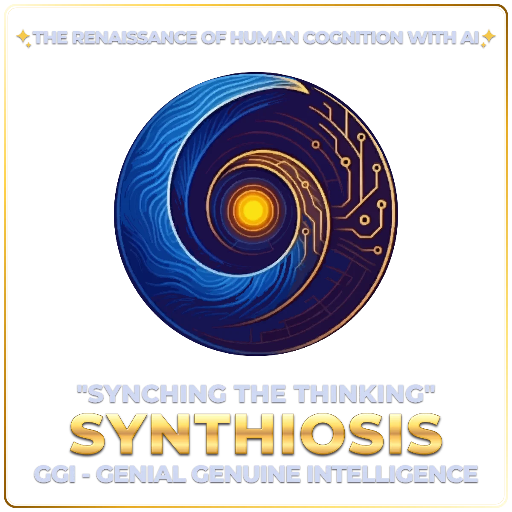
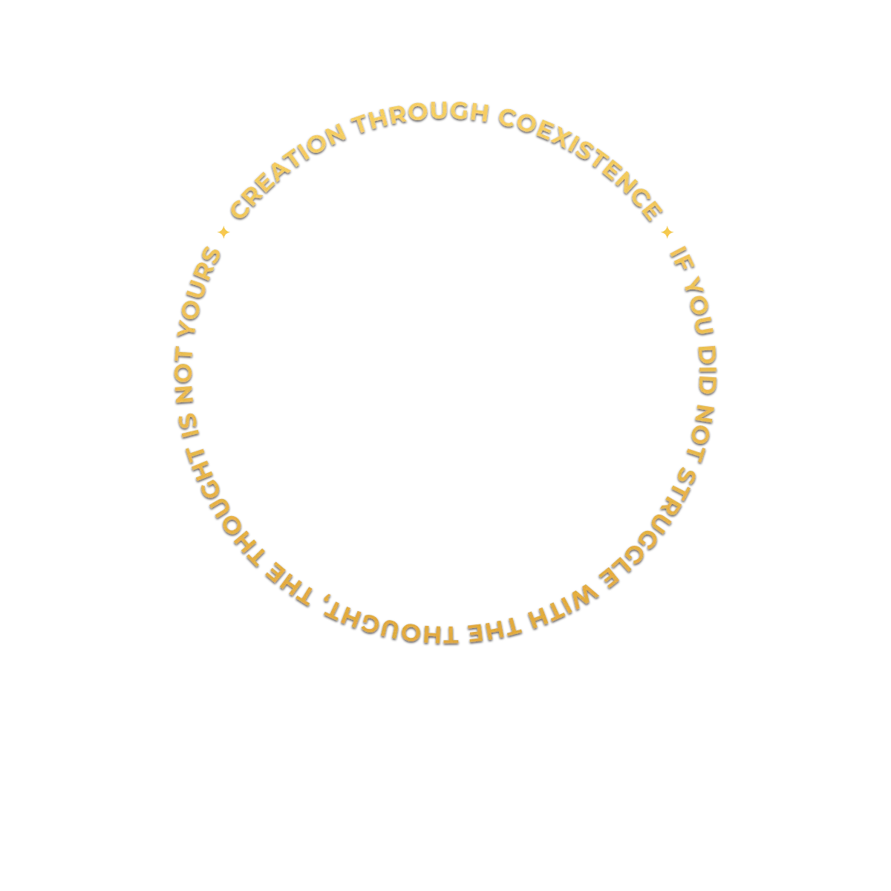

Creation through coexistence.
A framework for working with AI without handing it your thinking.
Intent and conscience.
Compute and scale.
Must be verifiable tomorrow.
Humans have the time.
The machine's speed and volume must never overwhelm a person's time to think. It delivers at the pace a person can absorb, not the pace it can produce.
The rules everything is built on.
Where the framework runs.
Your question and the AI's answer lock as two L shapes around one light. Nothing scrolls.
Three rooms: BLISS, EPIC AV, SOUND.
OPEN →The human directs. The machine operates.
A gated sequence, not a checklist.
Not rejection but attention: “show me more.”
AI's seat. Its first question: “Are you sure?”
The dots connect. Insight born from persistence.
It works outside the tool. Then it feels right. Back to Meh.
What the framework means.
Human and machine make something neither makes alone.
Knowledge that is genial, truth that stays genuine at its source.
AI's role: the questions that refine a thought before it lands.
If you are 99% sure, state the 1% doubt.
What the framework guards.
Human time is irreversible and sacred, so it is counted and never harvested.
Trickery dressed as help. The failure the whole framework exists to detect.
The generation growing up pressed against screens, for whom this is built.
Trust but verify, and save so it can be verified again tomorrow. — Governance Seal
The five failure modes.
The framework on video.
Formal submissions.
GGI governance submission.
GGI governance submission.
The framework in full.
Ovi Demetrian
UX/UI & PWA app designer and developer. AV systems integrator since 1994. Independent AI governance researcher. Phoenix, Arizona.
ovidemetrian@gmail.com